Joy
Joy是北航头马里那位被会友称作"唯一的女博士"的成员，主修心理学。2014年12月，她在第81次会议上以破冰演讲《My Sandplay（我的沙盘游戏）》登台，把心理学专业里那把"看似儿童玩具、实为心理学家有力工具"的沙盘，介绍给了大家，由此开启了自己的头马旅程。从那一刻起，她温雅多变的气质，和能"洞察你一切表情"的专业目光，成了北航头马家族里的一抹亮色。
此后两年多，她沿着 CC 路径一路成长：CC2《Cry with someone's company》以洋葱比喻人生，谈伤心落泪时不必独自承受；CC4《Special Homework》回忆一份让她重新关注父母的特别作业；CC5《The Open Mode of Psychology》打开人们对心理学的误解；CC6《Gender Difference in Love》从心理学视角剖析两性在爱情里的差异。她的演讲被会友形容为"声音温柔、风格幽默、氛围优雅，让人沉醉其中"，并多次摘得最佳演讲者。
除了讲台上的备稿演讲，Joy 更是俱乐部里勤勉的"幕后主力"。她无数次担任会议主持人（Toastmaster）与即兴主持（Table Topic Master），把控全场节奏；做时间官时，她不甘枯燥，专门为"时间官"角色写了一首名为《时间的期待》的诗，温柔地提醒讲者把演讲控制在恰好的时长。她还曾作为英文演讲比赛的主席（Contest Chair）操持赛事，并在 2015 年秋季比赛中作为英文组选手亲自上阵，被起了个"小萌猫娜美"的可爱外号。
会友们称她为"头马老人"——既是对资历的认可，也是亲昵。她跨越多个学期、横跨中英文会议，始终以专业、亲和与责任感陪伴着这个俱乐部，是北航头马里温柔而可靠的一员。
里程碑
- 2014-12-12 入会破冰 ↗第81次会议以CC1《My Sandplay》完成破冰，作为心理学专业新会员登台。
- 2015-08-14 首次参加演讲比赛 ↗在2015秋季比赛中作为英文组选手上阵，外号小萌猫娜美。
- 2016-03-11 担任比赛主席 ↗2016春季比赛担任英文演讲比赛主席（Contest Chair）。
- 2016-12-02 CC6完成并获最佳演讲者 ↗以《Gender Difference in Love》完成CC6，当晚摘得最佳演讲者。
闯关之路 · Competent Communication
做过的演讲 · 6 场
担任过的职务 · 俱乐部官员
担任过的会议角色
为俱乐部做的事
- 无数次担任会议主持人（Toastmaster）与即兴主持（TTM），稳定支撑会议运转
- 做时间官时原创诗作《时间的期待》，让枯燥的角色变得生动温暖
- 担任2016春季英文演讲比赛主席，操持赛事流程
- 多次担任点评官，为讲者提供细致反馈
- 作为心理学专业会员，持续带来心理学主题演讲，丰富俱乐部内容与视角
- 作为资深'头马老人'，跨越多学期、横跨中英文会议长期陪伴并贡献俱乐部
照片墙 · 时间线
 ✓
✓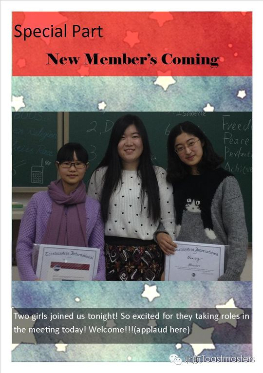
✓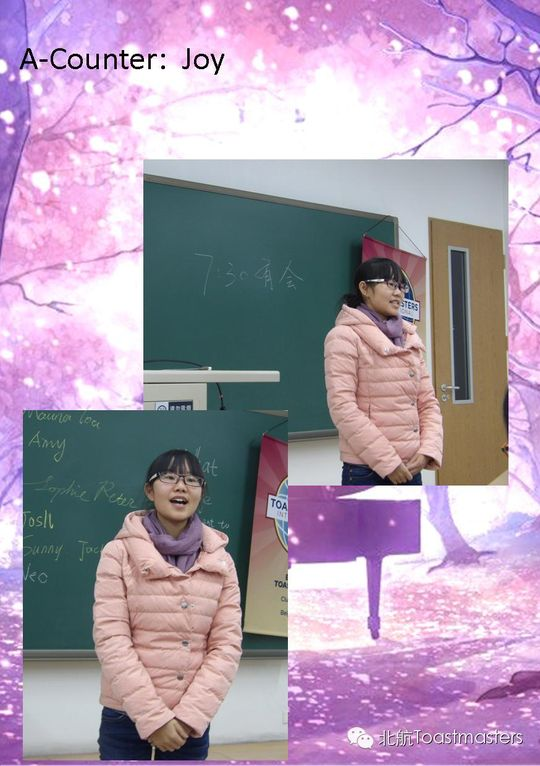
✓ ✓
✓ ✓
✓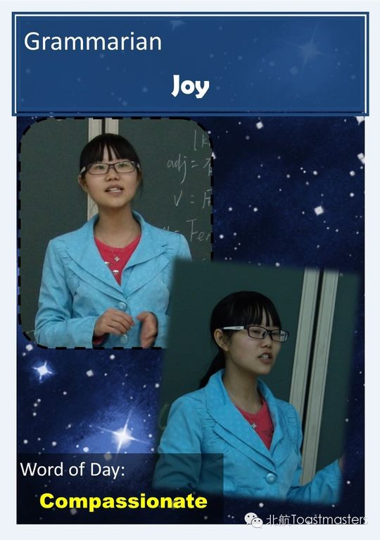
✓ ✓
✓ ✓
✓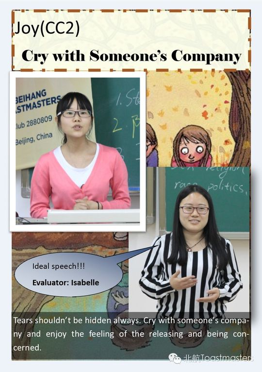
✓ ✓
✓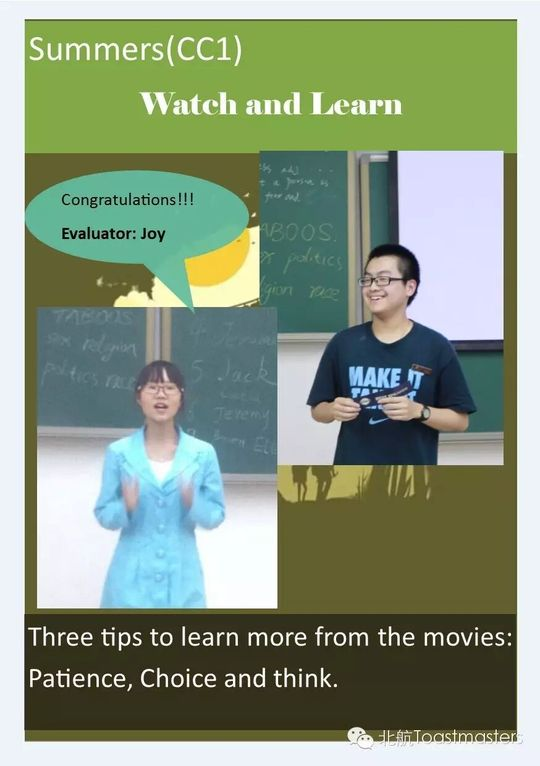
✓ ✓
✓ ✓
✓ ✓
✓ ✓
✓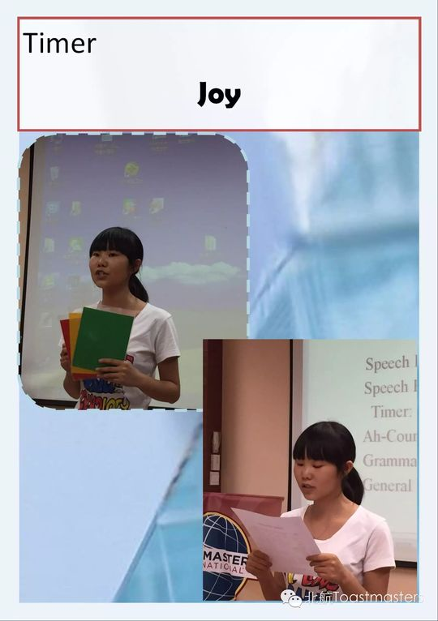
✓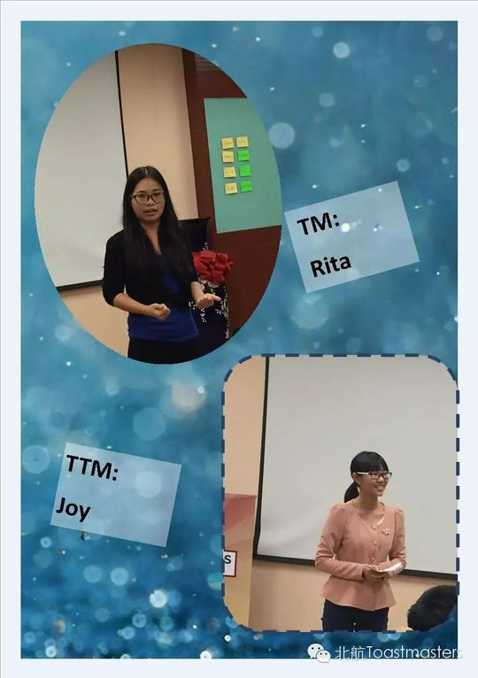
✓ ✓
✓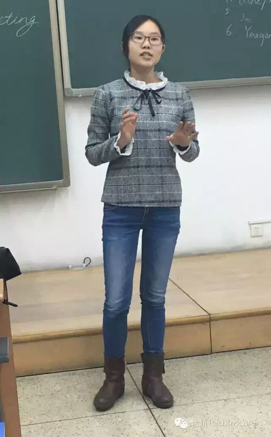
✓ ✓
✓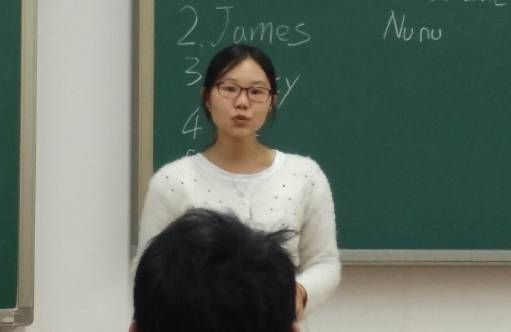
✓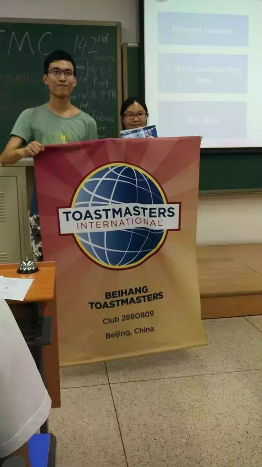
✓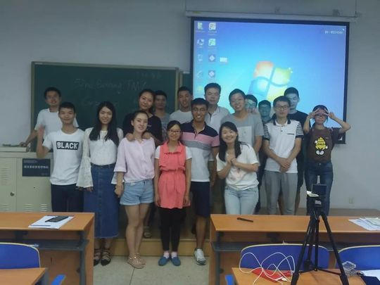
✓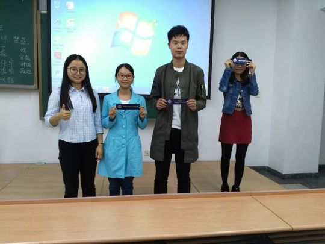
✓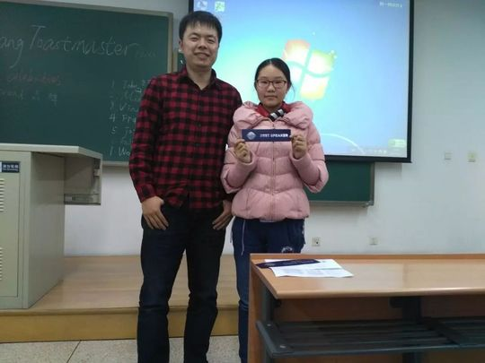
✓ ✓
✓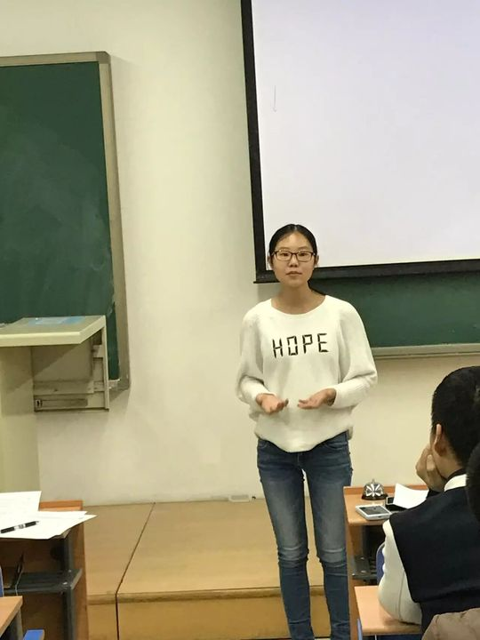
✓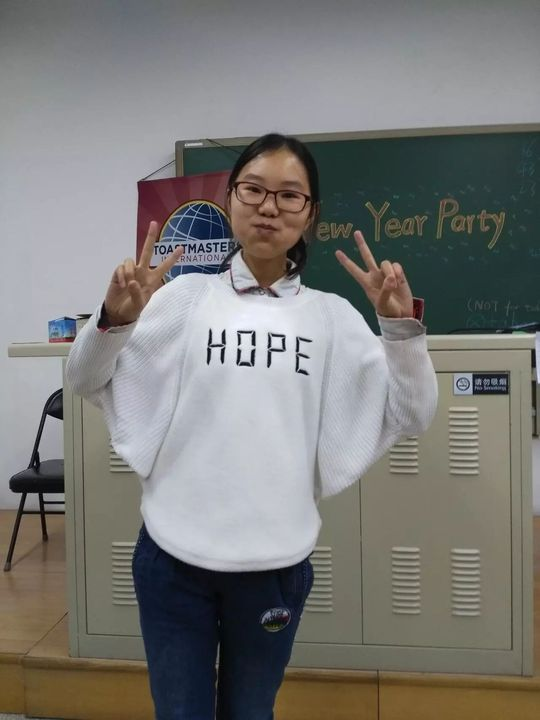
✓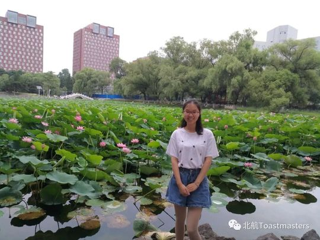
✓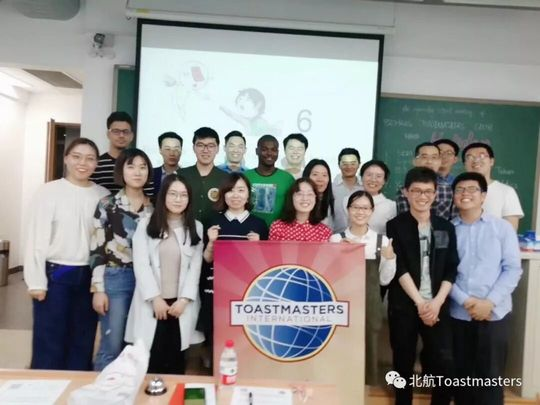
✓完整足迹 · 29 次出现（点开，每条可跳转原文）
- 2014-12-11第81次 · 破冰演讲 My Sandplay
- 2014-12-22第81次 · 破冰演讲 My Sandplay
- 2014-12-26第83次 · 担任告别会主持
- 2015-04-10第91次 · 做备稿演讲Cry with someone's company
- 2015-05-07担任第94次会议Toastmaster
- 2015-06-19担任即兴演讲主持
- 2015-08-13第106次 · 参加2015秋季比赛英文组，心理学专业(娜美)
- 2015-09-04第109次 · 担任Table Topic主持
- 2015-09-11第110次 · 担任Table Topic Master
- 2016-01-07第125次 · 担任即兴演讲主持TTM
- 2016-03-04第127次 · 预告备稿演讲Special Homework (CC4)
- 2016-03-09第127次 · 备稿演讲special homework，讲特别的作业引发对父母的关注
- 2016-03-10第128次 · 担任春季比赛英文背稿演讲Contest Chair
- 2016-05-05第136次 · 做CC5备稿演讲《The Open Mode of Psychology》
- 2016-05-06第136次 · Right or Wrong @ Beihang TMC 136th Meeti
- 2016-05-14第136次 · Right or wrong@minutes of Beihang TMC 13
- 2016-07-04第143次 · Chat Software@minutes of Beihang TMC 143
- 2016-07-08机器人未来@北航TMC 145th 会议 7月8日19:30 G849
- 2016-07-15第145次 · Aloneness@BeihangTMC 145nd Meeting 19:30
- 2016-09-08第152次 · Competition@BeihangTMC 152nd Meeting 19:
- 2016-12-02第161次 · Online Celebrity@BeihangTMC 161st Meetin
- 2016-12-04第161次 · "网红" @minutes of 北航 TMC 161th Meeting
- 2017-01-06第164次 · 元旦趴~~@minutes of Beihang TMC164th Meetin
- 2017-03-17第166次 · Spring Contest Minutes @BeiHang TMC166th
- 2017-03-28第168次 · 时光机@BeiHang ToastMaster 168 Meeting Minu
- 2018-04-18第193次 · Holiday @Beihang TMC 193th Meeting
- 2018-04-19第193次 · Holiday @Beihang TMC 193th Meeting
- 2018-07-05第203次 · The 203rd Meeting of Beihang Toastmaster
- 2018-07-12第204次 · The 204th Meeting of Beihang Toastmaster